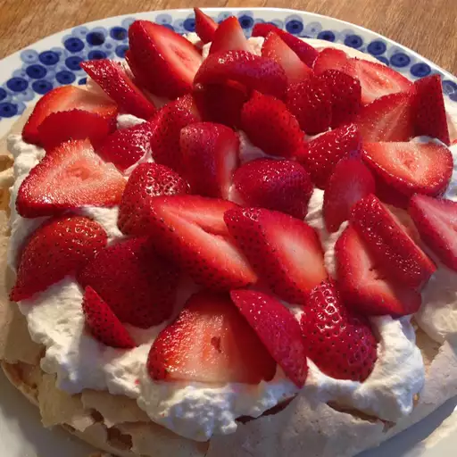

Pavlova

Try this fun Pavlova recipe for a delicious dessert! Fresh fruit, especially berries and kiwis, balances the sweet, gooey crunch.
Ingredientes
- ¾ cup sugar
- 2 teaspoons cornstarch
- 3 egg whites, at room temperature00
- 2 teaspoons vanilla extract, divided
- ¾ teaspoon white vinegar
- 2 cups heavy cream
- 3 tablespoons confectioners' sugar
- 1 pint whole strawberries, stems removed
Pasos
- Preheat the oven to 250 degrees F (120 degrees C). Line a baking sheet with a silicone baking mat or parchment paper.
- Whisk sugar and cornstarch together in a bowl. Beat egg whites in a second bowl until foamy with a thick, ribbony texture, 2 to 3 minutes. Whisk in 1/4 of the sugar mixture until completely incorporated, about 30 seconds. Repeat with the remaining sugar mixture, whisking after each addition, until all is incorporated and egg whites are glossy and thick
- Add 1 teaspoon vanilla and vinegar; whisk until you can lift the beater or whisk straight up and egg whites form a sharp peak that holds its shape, 2 to 3 minutes.
- Spoon egg white mixture onto the prepared baking sheet; spread out into a 2x6-inch disk.
- Bake in the preheated oven for 1 hour. Turn off the oven, crack open the oven door, and let the Pavlova cool for 1 hour.
- Transfer cooled Pavlova to a serving plate.
- Whip cream, sugar, and remaining 1 teaspoon vanilla in a bowl until soft peaks form, 3 to 4 minutes. Spread over Pavlova and top with fresh strawberries